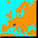

The Zine
Special Edition
The 34th Issue
-
 Editor Edward Hawthorne:
About The Diplomatic Pouch
Editor Edward Hawthorne:
About The Diplomatic Pouch -
In it's 34th Issue, the Zine pays tribute to....
-

William Attia:
Denmark
-
One penninsula, so many options. Should Germany bounce Russia, Sealion the English, or just hold for the build?
-
Ali Baba:
Tunis
-
Tunis is most important to Italy, of course, but what does it mean to other potential owners? The answer may lie within a balance of power.
-
Nathan Barnes and Dan Miller:
Sweden
-
Russia is not a significant rival to the German until after the West has been sorted out. So why is Germany bouncing Russia out of Sweden? Dan Miller gives a global perspective.
-
Andy Bartalone:
Trieste
-
Trieste: "An important spot on the eastern stalemate line, suffers from the same problem as Venice...."
-
EDI Birsan:
EDInburgh
-
And who would you have thought more fitting to write about Edi than Edi himself?
-
Jim Burgess:
Liverpool
-
Liverpool, "Let it be, Let it be, Let it be...."
-
Jim Burgess:
Rome
-
Jim introduces the Italian Oktoberfest opening in strict contrast to a Fleet Rome.
-
Jim Cheaney:
Bulgaria
-
Bulgaria often becomes a battleground in the mid-game and if lost, how Turkey takes Bulgaria back may determine its destiny.
-
Yann Clouet:
Rumania
-
It's tough masking a solid Juggernaut opening when everyone is hypersensitive but Yann and Edi prove nothing is as it seems. Not only does this RT get rolling but Yann soon discovers that Rumania may be the answer to defeating the Lepanto!
-
David E. Cohen:
Spain
-
How plain is Spain when playing in a vain game of emotional pain?
-
Bruce Duewer:
Holland
-
"Payola holland, german army once ignored, convoy to london." Hmmmm, I wonder which direction Bruce is going?
-
Rick Desper:
Paris
-
Rick shares why taking Paris is paramount to the fall of France.
-
Jay Furr:
Smyrna
-
Jay begins with ouzo over ice citing, "It was the closest I could get to something legitimately Turkish, in honor of Smyrna..." and then switches to rye whiskey and ginger ale. Oh, but there's more.
-
Eric Goodman:
Budapest
-
It seems that a great number of diplomats dislike playing Austria. With assistance from Jody McCullough and Doug Massey, Eric shows how such Austriaphobics have affected power assignments on two judges.
-
Edward Hawthorne:
Norway
-
The litmus test to identifying a Northern Alliance may lie in Scandanavia. See if you agree.
-
Sascha Hingst:
Berlin
-
Five ways to take Berlin - and five reasons to do so.
-
David Hood:
Kiel
-
David asks, "What is the biggest advantage to playing Germany?" Obviously the answer revolves around Kiel but why?
-
Eugene Hung:
Munich
-
Munich is often seen as the soloist's center but Eugene takes Munich's influence a step further. See how other powers view the supply center.
-
Eric Hunter:
Sevastopol
-
Eric outlines seven different strategies centered around Sev but the real question readers want to know is, why Sevastopol ...?
-
Karen Hunter:
Ankara
-
Talk about relationship management. Yes, this is a husband and wife team dueling over the Black Sea: Sevastopol versus Ankara
-
Glenn Ledder:
Greece
-
What's this, a stalemate line involving Greece? Introducing the Navarino Line!
-
Jeremiah Lee:
Marseilles
-
Marseilles means different things to different powers. Jeremiah suggests that you listen carefully to what others are saying.
-
Andy Marshall:
Brest
-
Andy attempts to deliver an article about Brest without cracking a joke. See how far he makes it.
-
Chris Martin:
London
-
I heard it said once that Chris Martin could talk and talk and talk, but the question begs to be asked, can he write? Read this missive and judge for yourself.
-
Doug Massey:
Belgium
-
All of the jokes and off-board bantering about Belgium are warranted. Massey proves that Belgium is where all the action is!
-
Brendan McClure:
Livonia
-
I thought you said this was standard Diplomacy? Since when was Livonia considered a supply center?
-
Millis Miller:
Portugal
-
Portugal is often a space that is neglected, but to France it's a center that should not be taken lightly. Here's an analysis to prove it.
-
Timo Müller:
Warsaw
-
It's central position is often overlooked and so the offensive and/or defensive strategy begins.
-
Larry Peery:
Venice
-
"Cutting to the chase, as David Hood and others would do, one is left with this simple fact: For Venice the game follows historical reality. And therein lies our tale."
-
JC Ravage:
Constantinople
-
What lessons can we learn from the collapse of the Byzantine Empire centered around Constantinople?
-
Jon Saul:
Serbia
-
Jon argues Serbia's significance over other "centers in the middle." Serbia is the only center to border six or more spaces and five other centers.
-
Ray Setzer:
Naples
-
It's often overlooked or underestimated but see why Naples is Italy's most versatile center.
-
Dr. Cyrille Sevin:
Vienna
-
Dr. Sevin reminds us why Vienna was the center of the European universe.
-
Matt Shields:
Moscow
-
Mister Shields claims Moscow is, "One of those centers that are neglected for most of the game." See if you agree.
-
Dan Shoham:
St Petersburg
-
Long-time Zine author Dan Shoham shares his thoughts about St. Petersburg's prominent mind-body interface implications.
-
 The Editor and the Readership:
Pouch Deposits
The Editor and the Readership:
Pouch Deposits -
The Editor brings you a break in your regularily scheduled program, The Pouch Deposits....
[ The Zine |
The DPjudge |
Online Resources |
Showcase |
Postal |
Email |
Face to Face |
Gear
]
The Diplomatic Pouch is brought to you by
the DP Council.
The Zine section is maintained by
John Coffin (jcoffin@diplom.org).